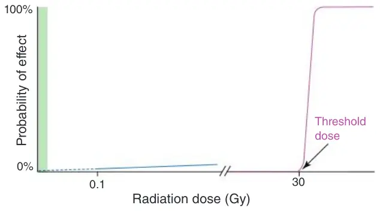

نسخه استخراجشده؛ ترجمه یا تأیید علمی انجام نشده است. وضعیت: captured
قدم 1 · theory
جدول جمعبندی
بلوک ۱ — عوارض دهانی پرتودرمانی
فرکشنیشن: ۲ گری روزانه، ۱۰ گری هفتگی، ۶ تا ۷ هفته، مجموع ۶۰ تا ۷۰ گری، سه سود: تخریب تومور بیشتر، ترمیم بافت طبیعی، افزایش فشار اکسیژن تومور.
موکوزیت: پایان هفتهی دوم، شبهغشای سفید تا زرد، شدیدترین در پایان درمان، ترمیم تا دو ماه، فیبروز ← مخاط آتروفیک، نازک، بیعروق، زخم میتواند نکروز یا عود تومور باشد ← بیوپسی.
چشایی: هفتهی دوم تا سوم، کاهش با ضریب ۱۰۰۰ تا ۱۰٬۰۰۰، خلفی زبان ← تلخ و ترش، قدامی ← شور و شیرین، برگشتپذیر در ۲ تا ۴ ماه.
بزاق: سقف ۲۵ گری پاروتید، ۳۹ گری سابمندیبولار (سابمندیبولار مقاومتر)، ۵۰٪ افت در هفتهی نخست، زیر ۱۰٪ ظرف یک سال، زیر ۴۵ گری ← ۵٪ از دست رفتن دائمی، ۶۰ گری و بالاتر ← ۵۰٪، pH ۵٫۵ در برابر ۶٫۵، ظرفیت بافری و کلسیم کاهش.
پوسیدگی پرتویی: سه الگو (سطحی گسترده، سرویکال محیطی که تاج را میبرد، رنگدانهگذاری تیرهی تاج)، متمایزکننده: محل، سیر سریع، حملهی گسترده، میکروبها: موتانس، لاکتوباسیلوس، کاندیدا، پیشگیری: ژل فلوراید سدیم خنثی ۱٪ در تری سفارشی، روزانه، تهدید مادامالعمر.
دندانها: وابسته به مرحلهی تکامل، زودهنگام ← نابودی جوانه، نیمهتکامل ← بدشکلی و توقف ریشه، سازوکار رویش پرتومقاوم است — دندان بیریشه هم میروید.
ORN: آسیب عروق پریوستئوم و کورتکس، تعریف: استخوان در معرض که سه ماه ترمیم نمییابد، بدون تومور، با رد علل دیگر، سه هیپو: هیپوکسی، هیپوواسکولاریتی، هیپوسلولاریتی، ۶ تا ۱۲ ماه، بروز ۵ تا ۷٪، مندیبل بیش از ماگزیلا، نادر زیر ۵۰ گری، خطر ۱۱ برابر بالای ۶۶ گری، پهن شدن PDL نیاز به مدیریت ندارد اگر استخوان سالم باشد.
مراقبت: ترمیم پیش از درمان، کشیدن با ۲ تا ۳ هفته فرصت ترمیم، دوز تشخیصی ناچیز است و نباید مانع رادیوگرافی اندیکاسیوندار شود، تریسموس از دو ماه پس از درمان، ماستر و پتریگویید.
بلوک ۲ — سرطان پرتویی
جمعیتهای مرجع: نقاشان رادیوم، کودکان درمان پوست سر، فلوروسکوپی سل، هیروشیما و ناکازاکی و چرنوبیل.
ویژگیها: از سرطان خودبهخودی قابل تمایز نیست، حساسترین بافتها پستان، تیروئید، مغز استخوان قرمز، نهفتگی سالها تا دههها، خطر در کودکان سه برابر.
آستانهی شواهد: افزایش خطی بالای ۱۰۰ میلیسیورت، زیر آن عدم قطعیت بزرگ، سه دلیل دشواری: نبود امضای مولکولی، نیاز به نمونهی عظیم، نهفتگی طولانی.
پنجرههای سنی: لوسمی اوج ۷ سالگی، صفر از ۳۰ سالگی، نهفتگی ۲ سال، میانه ۶ تا ۸، تیروئید زیر ۱۹، بالاترین زیر ۴، صفر بالای ۲۰، پاپیلاری، دو جنس برابر، بزاقی بیشتر خوشخیم، وارتین شایعترین، موکواپیدرموئید شایعترین بدخیم، پستان زیر ۲۰، صفر بالای ۵۰، رابطهی خطی، مغز ۱ گری، مننژیوم ۱۷ تا ۲۰ سال، گلیوم ۵ تا ۹ سال، بالاترین خطر در ۵ سالگی و کمتر.
وراثت: در مگس سرکه و ذرت اثبات شده، در انسان هیچ شواهدی نیست، پس منطق علمی برای محافظت گنادها وجود ندارد.
بلوک ۳ — جنین و آبمروارید
جنین حساستر چون سلولها تمایزنیافته و بهسرعت میتوتیکاند.
پیش از لانهگزینی ۰–۹ روز ← مرگ رویان، آستانه ۱۰۰ mGy (۱۰٬۰۰۰ برابر)، تا ۱۵ هفته ← میکروسفالی، ۱۰۰ mGy (۱۰٬۰۰۰ برابر)، ۸ تا ۲۵ هفته ← ناتوانی ذهنی شدید، ۳۰۰ mGy (۳۰٬۰۰۰ برابر).
پرتو زمینه به جنین: ۰٫۵ تا ۱ میلیگری در نُه ماه، نتیجه: تصویربرداری دندانی در بارداری ایمن است.
آبمروارید: نوع سابکپسولار خلفی یا کورتیکال، ICRP: ۰٫۵ گری، NCRP: ۱ تا ۲ گری، دوز عدسی در رادیوگرافی دندانی ۰٫۰۲ تا ۰٫۴ mGy، دستکم ۱۲۵۰ برابر کمتر.
بلوک ۴ — تصادفی در برابر بافتی
تصادفی: علت آسیب غیرکشندهی DNA، بدون آستانه، شدت مستقل از دوز، همهیاهیچ، فراوانی متناسب با دوز، در دوز تشخیصی رخ میدهد، تنها اثر تصادفی مربوط در انسان: سرطانزایی.
بافتی: علت مرگ سلولی، آستانه دارد — دوزی که اثر را در ۱٪ افراد میسازد، شدت متناسب با دوز، احتمال مستقل از دوز بالای آستانه، در دوز تشخیصی رخ نمیدهد.
چرا تصادفی آستانه ندارد: یک فوتون منفرد در اصل میتواند یک جهش بسازد.
نمودار: خطی بالای ۰٫۱ گری، برونیابی زیر آن، موکوزیت آستانهی ۳۰ گری و سپس صعود سریع به ۱۰۰٪.
بلوک ۵ — آسیب DNA
زمان: برهمکنش ۱۰⁻¹³ ثانیه، آسیب DNA تا ۱ میلیثانیه، پاسخ سلولی ثانیه تا روز، پیامد ساعت تا سال.
رادیولیز: H₂O⁺ + e⁻ و H₂O* ← H₃O⁺، OH•، الکترون آبی، H•، با اکسیژن: هیدروپروکسیل HO₂• و پراکسید هیدروژن، محدودهی مؤثر ۴ نانومتر، هیدروکسیل دوسوم آسیب.
توزیع آسیب: باز ۷۲٪، تکرشته ۲۷٪، دورشته ۱٪ و ۲۵ برابر کمفراوانتر از تکرشته، دورشته مهم چون کشتن سلول و تومورزایی.
ضایعهی خوشهای = دو یا چند آسیب درون دو دور مارپیچ، اسپور = ۹۵٪ انرژی، ۱۰۰ eV، قطر ۴ نانومتر، سه جفت یون، مارپیچ ۲ نانومتر، ضایعهی خوشهای سه برابر فراوانتر از دورشته.
ترمیم: باز و تکرشته ← برشی باز، دورشته ← نوترکیبی همولوگ و اتصال انتهایی ناهمولوگ، دیمر پیریمیدینی (فرابنفش) ← برشی نوکلئوتید، اتصال انتهایی ناهمولوگ خطاپذیر است و ۸۰٪ دورشتهها را ترمیم میکند.
بلوک ۶ — مرگ سلول
پیش از همانندسازی (G1 و اوایل S) ← انحراف کروموزومی، پس از آن ← انحراف کروماتیدی، حساسترین در G2 و میتوز، مقاومترین در اواخر S.
کشنده: حلقوی، دایسنتریک، پل آنافازی، غیرکشنده: ترانسلوکیشن و دلیشن کوچک که با درگیری انکوژنها تومورزایی میسازند.
مرگ میتوزی شیوهی غالب، برگونیه و تریبوندو: پرتوحساسی ∝ نرخ میتوزی ÷ درجهی تمایز.
کازارت: I وجتاتیو اینترمیتوتیک (بازال مخاط دهان، بنیادی مغز استخوان)، II تمایزیابنده، III همبند چندتوان (فیبروبلاست، اندوتلیال)، IV پسمیتوزی برگشتپذیر (هپاتوسیت)، V پسمیتوزی ثابت (نورون، عضله).
دو استثنا بر برگونیه و تریبوندو: لنفوسیتها (پرتوحساسترین سلول پستانداران) و آسینی سروزی بزاقی — هر دو با آپوپتوز میمیرند، در اینترفاز و بدون نیاز به میتوز، ظرف ساعتها، با تنظیم p53.
اثر تماشاگر: سلولهای مجاورِ پرتوندیده هم پاسخ نشان میدهند، سازوکارش دانسته نیست و تأثیرش در بدن زنده نامعلوم است.
سؤالهای این مرور سختترند و بسیاری یک عدد، یک آستانه، یا یک بیمار میدهند و میپرسند کدام اثر، کدام سازوکار، یا کدام اقدام.

دو منحنی دوز-خطر: تصادفی در برابر واکنش بافتی (White & Pharoah. Oral Radiology, 9th ed. — Fig. 2.6)
قدم 2 · question
همان بیمار دو ماه پس از پایان درمان بازمیگردد. کدام تغییرات را انتظار داری؟
۰۱
ترمیم کامل مخاط ولی با بافت آتروفیک، نازک و کمعروق در پی فیبروز؛ آغاز محدودیت باز کردن دهان؛ و بازیابی تدریجی چشایی که ۲ تا ۴ ماه طول میکشد
۰۲
موکوزیت شدیدتر از پایان درمان، چون اوج آن دو ماه پس از آخرین جلسه است؛ چشایی هنوز در پایینترین حد و بدون هیچ نشانهی بازگشت؛ و باز شدن دهان کاملاً طبیعی
۰۳
استئورادیونکروز پیشرفته با شکستگی پاتولوژیک مندیبل، که همیشه دقیقاً در ماه دوم پس از پایان درمان بروز میکند و نخستین عارضهی دیررس پرتودرمانی است
۰۴
بازگشت کامل همهی بافتها به وضعیت پیش از درمان بدون هیچ تغییر باقیمانده
قدم 3 · question
مطبی برای هر رادیوگرافی دندانی یک محافظ سربی روی ناحیهی گناد بیمار میگذارد و آن را «استاندارد حفاظت» مینامد. چه اشکالی دارد؟
۰۱
اشکالش این است که محافظ باید روی تیروئید گذاشته شود نه گناد، چون تیروئید تنها بافت حساس بدن به پرتو است؛ یقهی سربی تیروئید در هر رادیوگرافی دندانی، حتی اگر روی پرتوی اصلی بیفتد، مؤثرترین و ضروریترین راه حفاظت بیمار است
۰۲
اشکالی ندارد؛ اثرات وراثتی پرتویی در انسان اثبات شده و محافظت گناد الزامی است
۰۳
اشکالش تنها این است که محافظ باید سربی نباشد و از مواد سبکتر ساخته شود
۰۴
هیچ شواهدی از اثرات وراثتی پرتویی در انسانها نیست و مطالعات فرزندان بازماندگان بمب اتمی هیچ بیماری مرتبط نشان نمیدهند؛ بنابراین هیچ منطق علمی برای محافظت گنادها از پرتو در رادیوگرافی تشخیصی وجود ندارد
قدم 4 · question
کدام مجموعهی آستانهها درست است؟
۰۱
مرگ رویان پیش از لانهگزینی ۱۰۰ میلیگری، میکروسفالی تا ۱۵ هفتگی ۱۰۰ میلیگری، ناتوانی ذهنی شدید در ۸ تا ۲۵ هفتگی ۳۰۰ میلیگری، و آبمروارید بر پایهی ICRP نیم گری
۰۲
مرگ رویان ۱ میلیگری، میکروسفالی ۵ میلیگری، ناتوانی ذهنی ۱۰ میلیگری، و آبمروارید ۵۰ میلیگری، یعنی همگی در محدودهی دوز تنها چند رادیوگرافی پریاپیکال پیاپی در یک جلسه
۰۳
مرگ رویان ۳۰۰ میلیگری، میکروسفالی ۳۰۰ میلیگری، ناتوانی ذهنی ۱۰۰ میلیگری، و آبمروارید بر پایهی برآورد ICRP سی گری، همان آستانهی موکوزیت دهانی در پایان پرتودرمانی سر و گردن
۰۴
هیچیک از این اثرات آستانه ندارند، چون همگی اثر تصادفیاند و مانند سرطان با هر دوزی رخ میدهند؛ تنها احتمالشان با دوز و سن بارداری بیشتر میشود و شدتشان همیشه یکسان است
قدم 5 · question
درست یا نادرست: اثرات وراثتی پرتو با آنکه در مگس سرکه و ذرت نشان داده شدهاند، در انسان دیده نشدهاند؛ پس در انسان سرطانزایی تنها اثر تصادفی مربوط باقی میماند.
۰۱
صحیح
۰۲
غلط
قدم 6 · question
مقیاس زمانی رویدادها پس از پرتوگیری چگونه است؟
۰۱
برهمکنشها ظرف چند دقیقه رخ میدهند و آسیب DNA تنها پس از نخستین تقسیم سلولی پدید میآید، چون شکست رشته تا همانندسازی آشکار نمیشود؛ پیامدها ظرف چند روز کاملاند
۰۲
برهمکنشهای اولیه ظرف چند ثانیه؛ آسیب DNA تا چند روز؛ پاسخهای سلولی تا چند ماه؛ و پیامدهای زیستی تنها پس از چند دهه، چون هر مرحله منتظر پایان مرحلهی پیش است
۰۳
همهی مراحل همزمان و در کمتر از یک ثانیه رخ میدهند و هیچ پیامد دیررسی وجود ندارد؛ هر اثری که ماهها یا سالها بعد در بیمار دیده شود ارتباطی با آن پرتوگیری ندارد
۰۴
برهمکنشهای اولیه ظرف ۱۰⁻¹³ ثانیه؛ آسیب DNA کامل تا ۱ میلیثانیه؛ پاسخهای سلولی ظرف ثانیهها تا روزها؛ و پیامدهای زیستی در ساعتها، روزها یا سالها
قدم 7 · question
یک شکست دورشته و یک شکست تکرشته در یک سلول رخ دادهاند. چرا مسیر ترمیمشان متفاوت است؟
۰۱
هر دو با همان مسیر و همان الگو ترمیم میشوند و تفاوتی در سازوکار نیست؛ ترمیم برشی باز در هر دو حالت از کروماتید خواهر بهعنوان الگو استفاده میکند، پس هر دو شکست با دقت یکسان و بدون خطا ترمیم میشوند
۰۲
شکست تکرشته با ترمیم برشی باز و با استفاده از رشتهی مقابل بهعنوان الگو ترمیم میشود؛ ولی در شکست دورشته الگویی در دسترس نیست و باید از نوترکیبی همولوگ یا اتصال انتهایی ناهمولوگ استفاده شود
۰۳
شکست دورشته از رشتهی مقابل بهعنوان الگو استفاده میکند چون دو سر شکسته هنوز کنار هماند، و شکست تکرشته الگویی ندارد؛ به همین دلیل ترمیم تکرشته با اتصال انتهایی ناهمولوگ و خطاپذیر انجام میشود
۰۴
هیچکدام ترمیم نمیشوند و هر دو حتماً به مرگ سلول میانجامند
قدم 8 · question
کدام تطبیق ردهی کازارت با نمونهی سلولی درست است؟
۰۱
همهی انواع سلول در یک رده قرار میگیرند و ردهبندی کازارت تنها یک طبقه دارد
۰۲
وجتاتیو اینترمیتوتیک، یعنی حساسترین رده: نورون و سلول عضلانی، چون فعالیت متابولیک بالایی دارند؛ و پسمیتوزی ثابت، یعنی مقاومترین رده: سلولهای بازال مخاط دهان و بنیادی مغز استخوان، چون ترمیم DNA در آنها بسیار کارآمد است
۰۳
وجتاتیو اینترمیتوتیک با تقسیم سریع و تمایزنیافته: سلولهای بازال مخاط دهان و بنیادی مغز استخوان؛ همبند چندتوان: فیبروبلاست و اندوتلیال؛ پسمیتوزی برگشتپذیر: هپاتوسیت؛ و پسمیتوزی ثابت با حساسیت پایین: نورون و سلول عضلانی
۰۴
هپاتوسیت در ردهی وجتاتیو اینترمیتوتیک و پرتوحساسترین سلول بدن انسان است، چون کبد بیشترین سرعت تقسیم را دارد؛ فیبروبلاست و اندوتلیال در ردهی پسمیتوزی ثابتاند، و لنفوسیتها در هیچیک از پنج ردهی کازارت جایی ندارند
قدم 9 · question
کدام بافتها به اثرات سرطانزای پرتو یونساز حساسترند؟
۰۱
عضلهی اسکلتی، بافت عصبی مرکزی، و غضروف مفصلی فک
۰۲
پستان زنانه، غدهی تیروئید، و مغز استخوان قرمز
۰۳
مینای دندان، سمنتوم ریشه، و استخوان کورتیکال مندیبل
۰۴
همهی بافتها به یک اندازه حساساند و تفاوت بافتی وجود ندارد
قدم 10 · question
درست یا نادرست: اتصال انتهایی ناهمولوگ سازوکاری دقیق و بیخطاست که هشتاد درصد شکستهای دورشته را بدون از دست رفتن اطلاعات ژنتیکی ترمیم میکند.
۰۱
صحیح
۰۲
غلط
قدم 11 · question
کدام تطبیق شیوهی مرگ با ویژگیهایش درست است؟
۰۱
هیچکدام به p53 وابسته نیستند و هر دو مستقل از ژنهای سرکوبگر تومور رخ میدهند؛ تفاوتشان تنها در سرعت است: آپوپتوز ظرف چند دقیقه و مرگ میتوزی ظرف چند سال، و هر دو در همهی انواع سلول به یک اندازه دیده میشوند
۰۲
آپوپتوز: شیوهی غالب مرگ پرتویی و نیازمند ورود سلول به میتوز، ناشی از انحرافهای کشنده؛ و مرگ میتوزی: در اینترفاز و ظرف چند ساعت، بدون نیاز به تقسیم، با میانجیگری p53 و غالب در لنفوسیتها و آسینی بزاقی
۰۳
هر دو نیازمند ورود سلول به میتوزند و تفاوتشان تنها در سرعت است
۰۴
مرگ میتوزی: شیوهی غالب، ناشی از انحرافهای کشنده، نیازمند ورود سلول به تقسیم؛ و آپوپتوز: در اینترفاز و ظرف ساعتها، بدون نیاز به میتوز، با میانجیگری p53، غالب در لنفوسیت و آسینی سروزی بزاقی
قدم 12 · question
کسی میگوید «چون شکست دورشته تنها یک درصد آسیب DNA را میسازد، اهمیت زیستی چندانی ندارد». چرا نادرست است؟
۰۱
استدلال درستی است؛ آسیب باز که ۷۲ درصد است مهمترین آسیب زیستی است
۰۲
هرچند کمفراوان، شکست دورشته شکل بینهایت مهمی از آسیب است چون باور میرود هم کشتن سلول و هم تومورزایی را بسازد؛ و ترمیمش نیازمند مسیرهایی است که الگو ندارند و غالبترینشان خطاپذیر است
۰۳
نادرست است چون شکست دورشته در واقع ۷۲ درصد آسیب را میسازد نه یک درصد
۰۴
نادرست است چون شکست دورشته همیشه بدون خطا ترمیم میشود؛ نوترکیبی همولوگ همهی شکستهای دورشته را با کروماتید خواهر بهعنوان الگو بازسازی میکند، پس این آسیب پیامدی ندارد ولی آسیب باز خطرناک است
قدم 13 · question
کدام تطبیق سرطان پرتویی با پنجرهی سنیاش درست است؟
۰۱
لوسمی با اوج خطر حدود ۷ سالگی و بدون خطر قابل نمایش از ۳۰ سالگی، تیروئید با خطر زیر ۱۹ سالگی و بالاترین زیر ۴ سالگی و بدون خطر پس از ۲۰ سالگی، پستان با خطر پیش از ۲۰ سالگی و بدون خطر قابل سنجش پس از ۵۰ سالگی، و گلیوم با بالاترین خطر در ۵ سالگی و کمتر
۰۲
لوسمی با اوج خطر در ۵۰ سالگی، وقتی مغز استخوان فعالیت کمتری دارد، تیروئید با بالاترین خطر پس از ۶۰ سالگی و بدون خطر در کودکی، پستان تنها پس از ۵۰ سالگی و پس از یائسگی، و گلیوم تنها در بزرگسالان، چون مغز کودک پرتومقاوم است و بافت عصبی در حال رشد آسیب را ترمیم میکند
۰۳
همهی این سرطانها پنجرهی سنی یکسانی دارند و خطر در همهی سنین برابر است
۰۴
هیچیک از این سرطانها پنجرهی سنی مشخصی ندارند و سن در برآورد خطر نقشی ندارد
قدم 14 · question
عدد ۴ نانومتر در این یونیت دو بار ظاهر میشود. در هر مورد چه معنایی دارد و ارتباطشان چیست؟
۰۱
هر دو بار به قطر یک جفت یون تولیدشده در برهمکنش اشاره دارند و معنای یکسانی دارند؛ تکرارشان صرفاً تأکید بر همان کمیت است و اطلاعات تازهای دربارهی سازوکار آسیب نمیدهد
۰۲
نخست به قطر خود مارپیچ دوگانهی DNA اشاره دارد و دوم به قطر یک سلول پستانداران؛ و ارتباط معناداری میانشان نیست چون این دو مقیاس در دو سطح کاملاً متفاوت از سازماندهی زیستی قرار دارند
۰۳
نخست به طول مسیر یک الکترون ثانویه در بافت اشاره دارد و دوم به فاصلهی میان دو اسپور پیاپی روی همان مسیر؛ و ارتباطشان این است که چون فاصلهی اسپورها با طول مسیر برابر است، هر الکترون تنها یک اسپور میسازد؛ پس آسیب پرتو ایکس چنان پراکنده است که هرگز نمیتواند ضایعهی خوشهای بسازد، و ضایعهی خوشهای تنها با پرتوهای پرLET پدید میآید
۰۴
نخست، رادیکالهای حاصل از رادیولیز آب تنها اگر در قطر ۴ نانومتری گرد مارپیچ DNA تولید شوند به آن آسیب میزنند؛ و دوم، یک اسپور رسوب ۱۰۰ الکترونولت درون قطر ۴ نانومتری است؛ و ارتباطشان این است که یک اسپور دقیقاً در همان مقیاسی انرژی میگذارد که برای آسیب DNA مؤثر است، و چون مارپیچ ۲ نانومتر است میتواند ضایعهی خوشهای بسازد